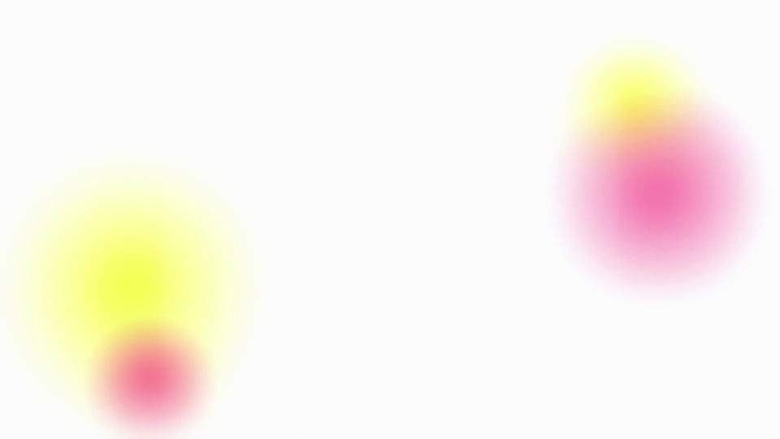
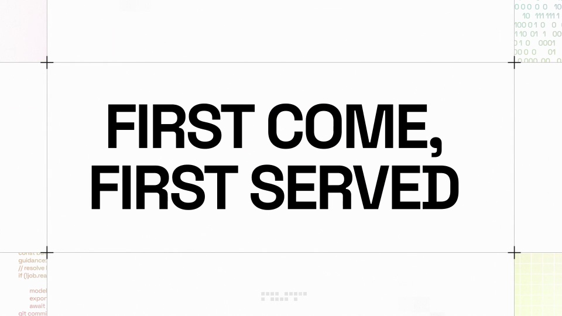
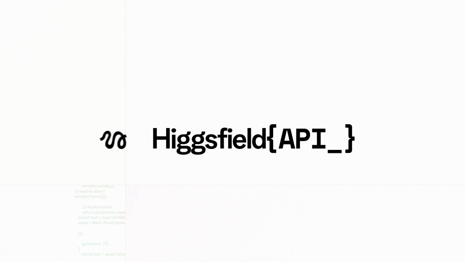
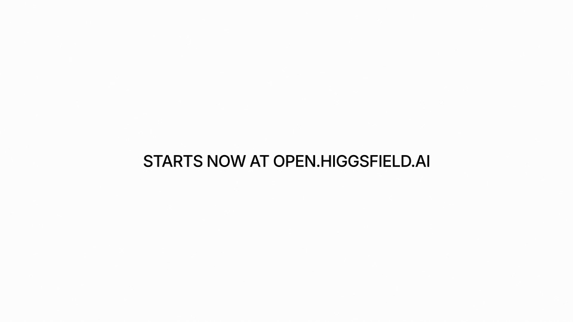

Higgsfield / V322
Higgsfield API｜返现活动
用余额变化解释返现，而不只把优惠数字做大。醒目的利益点之后，立即交代额度、范围与期限。
构图与编排 可播放 · 可替换内容
整体编排规则示例
查看 HTML 源码
<!doctype html><html lang="zh-CN"><meta charset="utf-8"><meta name="viewport" content="width=device-width,initial-scale=1"><title>Higgsfield API｜返现活动 · sequence</title><style>html,body{margin:0;width:100%;height:100%;overflow:hidden;background:#ffffff}canvas{display:block;width:100%;height:100%;object-fit:contain}</style><body data-mode="sequence"><canvas width="1000" height="600"></canvas><script src="data.js"></script><script src="common.js"></script><script src="scene.js"></script><script src="bridge.js"></script></body></html>画面元素硬币金额余额面板模型清单时间限制
MOTION LANGUAGE
动作与构图
局部动作 · 构图规则
01
先让优惠一眼可见
大数字与返现名称组成主标题，硬币或币形从周边聚集，中心留给文字。白底配荧光绿和洋红，数字采用结实的无衬线粗体，条件说明用正常字重。
02
余额是解释机制的主画面
余额是解释机制的主画面规则示例
查看 HTML 源码
<!doctype html><html lang="zh-CN"><meta charset="utf-8"><meta name="viewport" content="width=device-width,initial-scale=1"><title>Higgsfield API｜返现活动 · sequence</title><style>html,body{margin:0;width:100%;height:100%;overflow:hidden;background:#ffffff}canvas{display:block;width:100%;height:100%;object-fit:contain}</style><body data-mode="clip" data-start="8" data-end="13"><canvas width="1000" height="600"></canvas><script src="data.js"></script><script src="common.js"></script><script src="scene.js"></script><script src="bridge.js"></script></body></html>显示初始余额、支出、返还与最终余额。金额变化沿同一数值位置发生，支出和返还使用不同方向或状态词，避免只做无意义的数字滚动。
账户额度、总奖池与单户上限属于不同概念，分别标注，不让一个金额在不同镜头里悄悄换含义。
03
把使用条件留在行动入口之前
模型或服务范围、单户上限、截止时间与未使用额度处理方式依次交代。条件字不必与主金额一样大，但要有独立停留和足够对比。
换活动时先重算余额关系，更新优惠比例、适用对象、限额与期限，再调整品牌色、币形和入口。
SEQUENCE
段落与节奏
点击段落，定位到上方编排示意。




画面参考 · 离散静帧
KEEP THE RELATIONSHIPS
制作其他主题
- 可迁移为促销条款动画，必须保留额度、比例、期限与适用范围
- 硬币材质和品牌色可替换，余额计算关系保持一致
制作约束
硬币 / 金额 / 余额面板 / 模型清单 / 时间限制
- 硬币强调收益，随后用余额减少与补回解释返现机制
- 数字大字与小限定条件成组，不可只迁移醒目金额
- 后段上限与截止时间收束行动条件